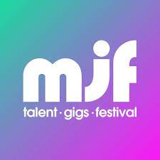

Home
page1
page2
page3
page4
Home
page1
page2
page3
page4
The Manchester Jazz Festival is a 9-10 day event where Jazz music is played.
It usually starts near the tail end of May, starting on the 19th
What's expected here is a lot of Jazz music, as the name expects, with some woderful scenery
The very first event took place in 1996, which has cemmented it as Manchester's longest running music festival, which keeps bringing people into it each and every year.